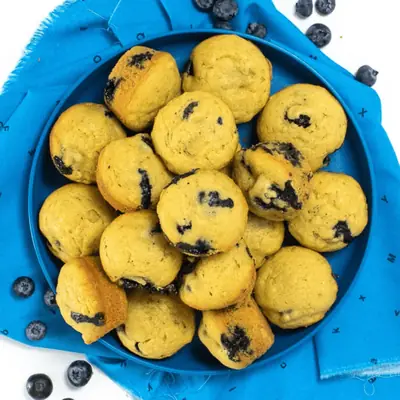

Fan-Favorite Blueberry Avocado Mini Muffins

Ingredients
- 1 cup white whole wheat flour (see notes)
- 1/2 tsp baking powder
- 1/2 tsp baking soda
- 1/4 tsp salt
- 1/4 cup ripe avocado, (mashed (roughly 1/2 a medium avocado)
- 1/3 cup maple syrup
- 1/3 cup mild olive oil, coconut oil or melted butter
- 1 egg
- 1/4 cup milk of choice, (regular, almond, hemp, oat, etc)
- 1/2 tsp vanilla extract
- 2/3 cup blueberries
Steps
- Prep: Heat oven to 375° F and spray or line a mini muffin tin.
- Dry Ingredients: In a medium bowl, whisk together the flour, baking powder, baking soda, and salt.
- Wet Ingredients: In a large bowl, with a hand mixer, mix the avocado until smooth and creamy. Add in the maple syrup and oil (or butter) and mix well. Add in the egg, milk, and vanilla extract and mix until completely combined.
- Combine: Pour the flour mixture into wet ingredients. Gently fold the ingredients together until just combined. Do not overmix.
- Add Blueberries: Gently fold in the blueberries.
- Fill: Spoon the batter into the muffin tin, filling 3/4 way to the top.
- Bake: Place the muffin pan into the oven for 12-15 minutes or until just golden.
- Cool: Let cool in the pan for 5 minutes before transitioning the muffins onto a cooling rack. Serve and enjoy!
Recipe by Baby Foode, from Baby Foode. Saved here for personal use; the original has the full notes, tips and photos. Open original